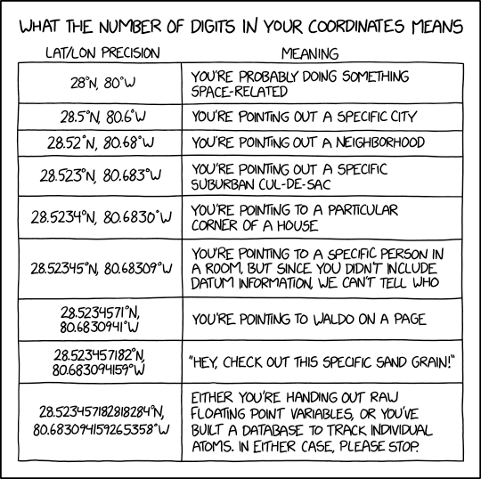

#How to filter by number of decimal places7 Spatial data
You’ve been through the taxonomic cleaning steps so now it’s time to clean up the spatial element. You may have flagged records as being taxonomically incorrect, it’s important to keep those in mind as you go through the spatial cleaning steps as you might learn more about those records. We will discuss some different ways to check for spatial outliers as well as the removal of records in certain geographic areas known to be problematic.
7.1 Quick visualisation
One of the most straightforward ways to check for spatial errors is to plot your data onto a map. More obvious spatial errors are much easier to spot visually.
7.2 Coordinate precision
Data from different sources are collected by different people often using differing tools. For example, some might record coordinates with a tool with high precision like a phone or a GPS, whereas others might record coordinates with low precision by manually recording a place name or writing coordinates after the fact.
Depending on the level of precision to answer your research question, you might consider discarding data of lower precision, or removing decimal places for data you know could not be that precise. At the ALA there is a “cooridnateprecision”/ “coordinateUncertainityIn Meters” assertion (see assertion section to download these with the data)

https://xkcd.wtf/2170/
Coordinate precision below 100km represents the grain size of many macroecological analyses (Zizka et al. 2020). Some studies have used a cut-off of spatial resolution >25,000m or precision with less than three decimal places (add a reference here). It is important to note that rasterized collections often have a significant proportion of records that might have low coordinate precision. Understanding the level of quality you need is important before removing/keeping large volumes of data.
7.3 Coordinate correction
Some of these steps may have been completed in a pre-cleaning step, however it’s now time to be more rigorous. As always we’ll start with fixing data before discarding, many coordinates issues can be solved with data manipulation instead of discarding:
Flipped coordinates: Flipped coordinates typically appear as a clustering of points, whereby swapping the latitude and longitude will place the coordinates where they are expected. (Jin and Yang 2020)
#example map of some flipped coordinates (what to look for)
# https://www.gbif.org/occurrence/3013406216 this has flipped coordinates, which GBIF has corrected
# https://www.gbif.org/occurrence/search?q=mammalia&continent=SOUTH_AMERICA&has_coordinate=true&has_geospatial_issue=false&issue=PRESUMED_SWAPPED_COORDINATE&advanced=1. ## the issue and flag is called 'presumed swapped coordinate' Numerical sign confusion: As with flipped coordinates, if there is a clustering of points mirrored to another hemisphere, consider swapping the sign and correct rather than discarding the points.
#example map, like coordinates off the coast of japan
# https://biocache.ala.org.au/occurrences/search?q=lsid%3Ahttps%3A%2F%2Fid.biodiversity.org.au%2Ftaxon%2Fapni%2F51360942&qualityProfile=CSDM&radius=50&lat=35.66845370835343&lon=138.9990234375#tab_recordsView
# eucs <- galah_call() %>%
# galah_identify("Eucalyptus") %>%
# galah_filter( year == 2005,
# dataResourceName == "The University of Melbourne Herbarium (MELU) AVH data") %>%
# atlas_occurrences()Country field doesn’t match coordinates: The coordinates could be wrong or just the country listed.
## this doesnt seem to be very common- atleast not in ALA data- because there is no neighboring country
# https://biocache.ala.org.au/occurrences/a34fca43-9e7c-4b37-8fe4-07cc18369465 Australian coordinates, country listed as Trinidad and Tobago
# https://www.gbif.org/occurrence/search?advanced=true&continent=SOUTH_AMERICA&geometry=POLYGON((-78.74961%20-8.25249,-76.29838%20-8.25249,-76.29838%20-4.74121,-78.74961%20-4.74121,-78.74961%20-8.25249))&has_coordinate=true&issue=COUNTRY_MISMATCH&locale=en&q=reptilia # GBIF example- reptiles located in Peru, originally recorded as Ecuador7.4 Coordinate cleaning
Once you have fixed everything you can, it’s time to remove records that still have errors. This doesn’t mean removing all outliers, you must have more than “it’s far away from the others” to justify a records removal.
Remove records with null or missing coordinates: This will be records missing partial or complete information. Missing values can cause errors, many analytical tools do not respond well to missing values. If you can’t find the information elsewhere, it’s best to remove it.
Remove records where longitude and latitude are equal: High likelihood that this is not where the record was recorded and, check first, however likely will need to remove
Remove records with zero coordinates: When plotting it on a map, zero coordinates will be found around the point at zero latitudes and longitudes. These records will not accurately represent their valid location and must be removed.
#zero coordinates acacia
#https://biocache.ala.org.au/occurrences/search?q=lsid%3Ahttps%3A%2F%2Fid.biodiversity.org.au%2Ftaxon%2Fapni%2F51382879&disableAllQualityFilters=true&qualityProfile=ALA&fq=spatiallyValid%3A%22false%22&radius=25&lat=-0.024032592068740033&lon=-0.06591796875#tab_recordsView Remove records plotted away from the known area of distribution of the species. It is essential to check the metadata to ensure that it is a data entry error and not a real outlier. In some cases, it’s worth checking the literature before discarding records like these. These can also be mis-identified species, if you’re working with data from many species, and you find a species point in amongst the environmental bounds of a similar looking species it might be worth going back to the original record and taking a closer look. However, if no images exist it might be difficult to determine if it is a taxonomic or spatial issue.There are several ways of dealing with this issue, but one option can be to mask data to remove points from falling off a determined area. –> unsure about this bit
I’m not sure I understand what the above means. But I think in general for less obvious errors, it’s best to suggest that before data analysis (and honestly, before seeing the data at all), people should determine whether there is an upper bound to remove coordinates (like a 95% confidence interval, or within xx km of an accepted expert distribution). Then run whatever model or test with the complete data and with the reduced data. If it makes a difference, probably make an informed decision based on literature of which results to use as the “main” findings.
Having written this out, a brief discussion about this rather than any suggestions is probably all that’s in scope for this book
The final decisions depend on the species, research question, model parameters etc
7.5 Optional record removal
Not sure why the below is optional? I think a lot of national or global analyses would require some kind of data cleaning for this
Remove records with coordinates assigned to country and province centroids: such as Centre of Country, botanic gardens, zoos, country capitals, biodiversity institutions, urban areas, and gbif headquarters. In some cases these records will haven actually been recorded at a zoo for example, in other cases this is often incorrectly georeferenced records. They can be tricky to spot but there are a few packages that deal with centroid data. Exploratory visuals can also help support findings, making it easier to spot clusterings of points.
Centroids are common when records are being assigned from georeferencing based on vague locality descriptions or from incorrect georeferencing. Sometimes, records are erroneously entered with the physical location of the specimen or because they represent individuals from captivity or horticulture, which were not clearly labeled as such.
In a few cases, zoos and botanic gardens might be where the record was sighted. However, in this case, it is not naturally occurring and should be removed. Records in urban areas may not want to be removed by everyone, but it is essential to note that it could be old data or have vague locality descriptions.
Remove records outside of the country of interest: In some cases, records outside the country of origin may be outliers. In other cases, they may be perfectly valid. It is important to analyze case-by-case and remove the record if necessary.
7.6 Checklist of data standardization
8 Notes
8.1 Missing data
(I wonder if this is really the place for this or better to just do this in the Spatial chapter)
- Remove records with no coordinates
8.2 Quick visualiations
A graphic plot of your data can be very telling and can help you spot potential errors that may be due to formatting.
8.2.1 GGally
A visual inspection of your entire dataset can save time and solve easy-to-spot errors.
8.2.2 Quick map
(I wonder if this is really the place for this or better to just do this in the Spatial chapter)
A simple way to visualize your data is to plot it on a map.
- Fix minor coordinates errors, such as inverted or badly formatted
8.2.3
8.2.4 CoordinateCleaner
Jin, Jing, and Jun Yang. 2020. “BDcleaner: A Workflow for Cleaning Taxonomic and Geographic Errors in Occurrence Data Archived in Biodiversity Databases.” Global Ecology and Conservation 21 (March): e00852. https://doi.org/10.1016/j.gecco.2019.e00852.
Zizka, Alexander, Fernanda Antunes Carvalho, Alice Calvente, Mabel Rocio Baez-Lizarazo, Andressa Cabral, Jéssica Fernanda Ramos Coelho, Matheus Colli-Silva, Mariana Ramos Fantinati, Moabe F Fernandes, and Thais Ferreira-Araújo. 2020. “No One-Size-Fits-All Solution to Clean GBIF.” PeerJ 8: e9916.